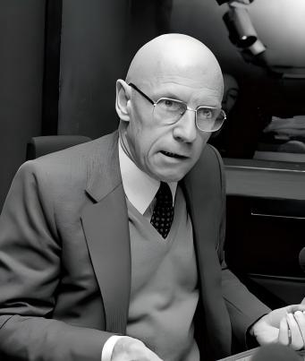

代表学者
霍尔是牙买加裔英国社会学家、文化理论家，伯明翰大学当代文化研究中心第二任主任，英国文化研究的奠基人和旗手。 霍尔的核心贡献主要有三：第一，1980年提出“编码/解码”理论，打破“发送者-信息-接收者”的线性传播模式，论证受众依据自身社会位置和文化资本进行解码，区分了主导-霸权式、协商式和对抗式三种解码立场，为受众研究和文化研究奠定理论基石。第二，主持编撰《表征：文化表征与意指实践》（1997年），系统阐述表征理论，将索绪尔符号学与福柯话语分析融合，分析媒介中的种族、性别和阶级再现。第三，对撒切尔主义的批判性分析，提出“威权民粹主义”概念，将文化研究与政治批评紧密结合。 霍尔的思想在中国影响深远，赵月枝的传播政治经济学研究、陆晔和潘忠党对中国新闻专业主义的分析，均体现了霍尔的方法论遗产。
霍克海默（1895-1973）与阿多诺（1903-1969）是德国法兰克福社会研究所的核心人物，法兰克福学派的创立者和批判理论的奠基人。二战期间流亡美国，1947年在阿姆斯特丹出版《启蒙辩证法》，其中“文化工业：作为大众欺骗的启蒙”一章成为批判传播学的经典文献。 “文化工业”概念是他们对大众文化最著名的批判。他们论证，文化工业并非“从大众中自发产生的文化”，而是被标准化、商品化、伪个性化逻辑支配的产业体系。电影、广播、流行音乐看似多样，实则重复同一配方，通过“不断许诺又不断否认”的机制制造虚假满足，消解大众的批判意识和反抗潜能。“启蒙退化为神话。”这一悲观论断使法兰克福学派成为批判学派最激进的一支。 文化工业理论深刻影响了后续的文化研究、传播政治经济学和媒介批判。但其精英主义立场（将受众视为被动的“文化笨蛋”）和对流行文化缺乏同情理解，也受到文化研究学派的修正。渠敬东和曹卫东翻译的《启蒙辩证法》（上海人民出版社，2006年）是国内标准读本。
哈贝马斯是德国哲学家、社会学家，法兰克福学派第二代代表人物，被公认为当代最具影响力的在世思想家之一。1962年出版教授资格论文《公共领域的结构转型》，1990年英文版出版后才在英语世界产生广泛影响。 公共领域被哈贝马斯定义为介乎私人领域与国家权力之间的社会空间，公民在此就公共事务展开理性的、批判的讨论，形成公共意见以监督国家权力。他追溯了18世纪布尔乔亚公共领域在咖啡馆、沙龙和早期报刊中的兴起，然后悲观地诊断了其在19-20世纪的“再封建化”——批判性公众消失，蜕变为被消费和操纵的对象。 在中国，公共领域理论引发了持久而热烈的讨论：互联网能否成为公共领域复兴的契机？还是沦为更隐蔽的再封建化空间？这一争议至今未有定论。曹卫东等翻译的《公共领域的结构转型》（学林出版社，1999年）是国内标准读本。

福柯是法国哲学家、思想史家，虽非严格意义上的传播学者，但其理论对批判传播学、文化研究和媒介研究产生了深远影响。1975年出版《规训与惩罚：监狱的诞生》，提出“全景敞视主义”和“规训社会”概念，成为监控研究、数字隐私批判的理论基石。 福柯在书中借用边沁设计的圆形监狱（Panopticon）建筑，提出全景敞视主义的权力运作逻辑：被监视者因意识到自己“可能被注视”而将监视内化，实现自我规训。权力由此从外在的暴力强制转化为内在的身体控制。这一分析框架被广泛应用于当代数字监控研究——社交媒体的可见性机制、算法推荐的行为预测、数据痕迹的永久存档，使全景敞视从物理空间扩展到虚拟空间，用户因“可能被数据记录”而持续调整在线行为。 福柯的话语理论同样影响深远。他论证，知识并非纯粹中立的真理，而是与权力交织的“话语构型”，决定着什么是可说的、什么是真的、什么是正常的。这一思想为媒介表征分析和批判话语分析提供了哲学基础。刘北成和杨远婴翻译的《规训与惩罚》（生活·读书·新知三联书店，2019年）是国内最权威中译本。
布尔迪厄是法国社会学家、人类学家、哲学家，法兰西学院院士，当代最具影响力的社会理论家之一。他虽然不是传播学领域的专门学者，但其“场域”“惯习”“资本”等核心概念对新闻传播研究产生了深远影响。 布尔迪厄对传播学的核心贡献集中体现在1996年出版的两本同名著作《关于电视》（Sur la télévision）中。他通过分析法国电视新闻的生产过程，揭示了新闻场域的结构性矛盾：新闻从业者表面上享有自主权，实则受到收视率压力、政治权力和经济资本的多重支配。他提出“新闻场域”概念，认为新闻生产不是一个自由的信息传播过程，而是在特定场域规则下运行的竞争性实践，记者在其中争夺的是“专业权威”这一象征资本。他进一步指出，“新闻场域”受到“政治场域”和“经济场域”的双重制约，其自主性十分有限。 布尔迪厄还提出了“象征暴力”概念，指通过符号系统施加于行动者的无形支配——受众在消费新闻时，常常不自觉地接受了新闻框架所隐含的价值判断和世界预设。这一思想与霍尔的编码/解码理论形成深刻对话，共同构成了批判传播学对媒介权力的系统性分析。布尔迪厄的理论在数字时代依然具有解释力——平台的算法推荐可以视为一种新的“新闻场域”规则，而用户的点击行为则构成了新型的“象征暴力”。
斯麦兹是加拿大裔美国传播政治经济学家，北美传播政治经济学批判学派的开创者和奠基人。斯麦兹对传播学的核心贡献集中体现在1977年发表的论文《传播：西方马克思主义的盲点》中。在该文中，他提出了极具开创性的“受众商品论”（Audience Commodity），批评西方马克思主义长期以来忽略了传播的经济维度。他论证，媒介产业生产的核心商品并非内容，而是受众本身——媒介通过提供节目作为“免费午餐”吸引受众的注意力，然后将打包好的受众注意力作为商品出售给广告商。受众在看似“免费”消费内容的过程中，实际上从事着为媒介创造价值的无偿劳动。这一理论以唯物主义的视角考察传播的物质性，在世界范围内引发了关于西方马克思主义“盲点”问题的持久争论，开启了批判传播学的重要研究方向。 斯麦兹还著有《依附之路：传播、资本主义、意识和加拿大》（1981年），系统分析了加拿大如何在传播领域逐渐依附英美资本主义国家，接续和拓展了传播政治经济学派的文化和传播帝国主义的批判思路。斯麦兹的理论想象同时建立在地缘政治中的西方和思想格局上的中国之上，毛泽东思想中对文化和政治的创造性论述是理解其传播理论得以成型的重要线索。 受众商品论深刻影响了后续的数字劳动研究，当代传播政治经济学中颇具影响的“受众商品2.0”和“数字劳工”概念正是斯麦兹理论在网络时代的拓展。批评者认为该理论经济决定论色彩较浓，将一切媒介使用都还原为经济剥削；默多克指出斯麦兹过分注重大众传播系统与经济基础的关系，从而低估了意识形态再生产的问题；萨特·贾利则认为斯麦兹关于受众商品的定义缺乏理论上的深入分析。但作为传播政治经济学的理论基石，受众商品论对数字平台资本积累逻辑的揭示至今仍具有极强的现实批判意义。
罗萨是德国当代哲学家、社会学家，法兰克福学派第四代代表人物和领军人物，被誉为当今德国最具原创性、最重要的社会批判理论家之一。 罗萨的核心理论贡献集中体现在2005年出版的教授资格论文《加速：现代社会中时间结构的改变》中。他观察到加速已经贯穿现代社会生活的各个方面，成为一种不可忽视的现象。罗萨区分了三种基本加速类型：科技加速、社会变迁加速以及生活步调加速。他论证，在技术加速、社会变迁加速与生活节奏加速的背景下，尽管表面上不断追求效率和进步，实际上却导致了“时间异化”现象——个体在效率至上的逻辑中陷入永恒的追赶与失控的困境。罗萨进一步将异化扩展为五种新异化范畴：空间异化、物界异化、行动异化、时间异化、社会异化与自我异化。 罗萨所有思想都围绕着“我们如何拥有美好生活”这一核心问题展开。在对社会加速进行批判性诊断之后，他提出了“共鸣”（Resonance）理论作为异化的扬弃之道，试图通过建立人与家庭和社会、空间和世界、生命和存在等多方面的共鸣关系来消解异化。罗萨一方面继承霍克海默、哈贝马斯等从工具理性角度批判资本主义社会奴役的思想传统，一方面又在现代社会加速层面系统说明了人类在“掌控世界”的追求中造成人与世界关系相扭曲的“新异化”。 社会加速批判理论为理解晚期现代社会提供了一种新的批判路径。在中国学术界，罗萨的理论引发了广泛讨论，其对数字时代时间焦虑、注意力涣散和信息过载等现象的分析具有极强的解释力。批评者认为共鸣理论在实践层面缺乏具体的操作路径，带有一定的乌托邦色彩，但作为法兰克福学派批判理论在当代的最新发展，罗萨的社会加速理论无疑为批判传播学提供了全新的理论资源。
德国哲学家、文化批评家，法兰克福学派外围核心成员。在传播与媒介研究方面，本雅明最著名的贡献是其1936年的论文《机械复制时代的艺术作品》。 在该文中，本雅明提出了一个影响深远的论断：机械复制技术（如摄影、电影、唱片）使艺术作品的“灵韵”——即原作因其独特性、在场性和仪式性而产生的那种不可复制的光晕——走向消逝。 传统艺术（如绘画、雕塑）具有独一无二的原真性，观众需要亲临现场才能体验其灵韵；而复制技术使艺术作品可以无限传播、为大众所接触，这改变了艺术与观众之间的关系结构。 本雅明对这一变化持有一种辩证的复杂态度：一方面，灵韵的消逝意味着传统权威的失落和审美体验的“去神圣化”；另一方面，这也使艺术摆脱了仪式的束缚，获得了政治化的潜力——电影等大众媒介可以成为唤醒大众阶级意识、推动社会变革的工具。 本雅明还提出了“作为生产者的作者”的概念，强调文化生产者应当反思自身在生产关系中的位置，而非保持“纯粹”的旁观者姿态。本雅明的思想对后来的文化研究、媒介理论和视觉文化研究产生了深远影响。
法国哲学家、电影导演，国际情境主义创始人。德波于1967年出版了《景观社会》一书，同年以同名电影形式呈现其核心思想。德波认为，在当代资本主义社会中，社会生活的一切方面都被“景观”——即被生产和再生产出来的图像、符号和表象——所中介和支配。 景观不是图像的简单集合，而是以图像为中介的人与人之间的社会关系。在景观社会中，真实的社会关系被表象所取代，“拥有”退化为“显得”。商品拜物教发展到了极致，不仅物质产品被商品化，连人的欲望、情感、亲密关系和自我认同都成为了可消费的景观。 德波运用“异轨”的手法创作同名电影——全片没有一个原创镜头，全部由从既有文本、广告、漫画和影像中挪用和拼贴的片段构成。这种形式本身就是对景观社会支离破碎、被商品化的精神状态的模仿和批判，同时也是一种“反意识形态的畅通语言”，旨在通过对资本主义日常生活的意识形态图景的“异轨”式重组，实现超越资本主义意识形态统治的真正交流。
英国传播学者，传播政治经济学的代表人物之一。默多克长期执教于英国拉夫堡大学。在著名的“盲点之争”中，默多克对斯麦兹的受众商品论提出了系统性批评。 在《关于西方马克思主义的盲点：对达拉斯·斯麦兹的回复》一文中，默多克指出斯麦兹理论的三个主要缺陷： 第一，忽视了国家角色在当代资本主义传播体系中的关键作用，国家不仅通过法规政策规范传播媒介市场，也是重要的媒介主体和广告主； 第二，将复杂的阶级斗争简化为经济过程，忽视了文化领域的抗争——受众不是完全被动的商品，而是具有能动性的文化行动者； 第三，过分强调媒介的经济功能，忽视了电视节目、电影等文化产品本身所具有的相对独立的价值生产逻辑。 默多克的批评代表了文化研究学派对传播政治经济学的经典质疑，也推动了传播政治经济学与受众研究之间的对话。
美国公共关系先驱，被称为“公关之父”。伯内斯是奥地利精神分析学家西格蒙德·弗洛伊德的外甥，其思想深受弗洛伊德群体心理学和精神分析理论的影响。 他结合了弗洛伊德对无意识动机的分析、李普曼《舆论》中关于公众认知局限的论述，以及威尔逊政府一战宣传实践的经验，发展出一套系统化的公共关系操作理论。 1923年，伯内斯出版了第一本公共关系理论著作《舆论的结晶》。伯内斯将“公共关系顾问”定义为一类新型职业角色——他们是公众日常生活的引领者和督导者， 是组织与公众之间的双向桥梁，而非单向输出的“宣传家”或“新闻代理人”。伯内斯的核心公关方法论包括三个层面： 第一，洞察公众心理动机，通过能触发人类本能（如逃避、好奇、好斗等）的符号、影像和记忆，将客户与能触动公众情感的象征符号相联系； 第二，善于利用传播媒介，借助报纸、广播等媒体在不同群体中传播观点和事实以影响舆论；第三，塑造群体观念，通过制造事件引发新闻、举办社交聚会整合意见领袖力量，引导公众立场。 伯内斯还特别强调了公关实践的道德问题——公关顾问应向媒体提供真实、准确、可循证的信息，坚持拒绝不正直客户，平衡客户需求与社会责任，“不为客户马首是瞻，亦对整个社会负责”。
核心理论
1.编码/解码理论
1980年，斯图尔特·霍尔发表《编码/解码》一文，彻底打破了“发送者—信息—接收者”的线性传播模式。霍尔认为，传播过程由“编码”和“解码”两个相对自主的环节构成：编码者依据主导文化秩序将意义嵌入文本，但受众并非被动接收，而是依据自身的社会位置和文化资本进行解码。他提出了三种假设性的解码立场——主导-霸权式（完全接受编码者的意图）、协商式（部分接受、部分抵抗）、对抗式（以完全相反的方式解读信息）。这一理论直接影响了陆晔和潘忠党“成名的想象”的研究方法，赵月枝的传播政治经济学研究也体现了编码/解码的思维范式。有学者批评三种解码立场过于简化，实际解码行为更为复杂和混杂，且霍尔对编码环节的微观权力分析尚不充分，但该理论无疑奠定了文化研究和受众研究的理论基石，为理解媒介文本的意义争夺提供了核心框架。
2.文化工业
1947年，霍克海默与阿多诺在《启蒙辩证法》中提出“文化工业”概念，对大众文化展开了激烈的哲学批判。他们论证，文化工业并非“从大众中自发产生的文化”，而是一套通过标准化、商品化和伪个性化的生产方式，将艺术和文化变为可批量复制商品的产业体系。电影、广播、流行音乐看似风格多样，实则遵循同一逻辑——通过“不断许诺又不断否认”的机制制造虚假满足，麻痹大众的批判意识，使其沉溺于娱乐而丧失对社会秩序的反思能力。阿多诺对爵士乐的著名批评集中体现了这一立场：看似即兴自由的爵士乐，实际遵循着严格的程式化套路。在中国，吕新雨对电视收视率与公共性冲突的分析延续了文化工业的批判精神。该理论被批评为精英主义立场过于傲慢，将受众视为被动的“文化笨蛋”，对流行文化缺乏同情理解，忽略了受众的能动性解码能力，法兰克福学派的悲观立场后来被伯明翰学派的文化研究所修正。
3.公共领域
1962年，哈贝马斯出版《公共领域的结构转型》，追溯了18世纪布尔乔亚公共领域在咖啡馆、沙龙和早期报刊中的兴起。公共领域被界定为介乎私人领域与国家权力之间的社会空间，公民在此就公共事务展开理性的、批判的讨论，形成公共意见以监督国家权力。然而，哈贝马斯随后悲观地诊断了这一空间的“再封建化”——随着大众媒体的商业化与国家干预的扩张，批判性公众逐渐消失，蜕变为被操纵的消费公众。该理论在中国引发了持久而深刻的讨论：胡翼青对传播学本土化的反思、吕新雨对电视公共性的讨论均深植于这一问题意识，而互联网能否成为公共领域复兴的契机至今仍是争论焦点。女性主义学者批评哈贝马斯忽略了公共领域的性别排斥机制，其历史叙事也带有将资产阶级公共领域理想化的浪漫倾向，对边缘群体的替代性公共领域估计不足，但这一理论框架对理解媒介与民主的关系仍具有奠基性意义。
4.霸权理论
意大利马克思主义者葛兰西在《狱中札记》中提出“文化霸权”概念，以此区别于传统马克思主义的经济决定论。霸权指的是一种特殊的统治形式：统治阶级并非单纯依靠暴力强制，而是通过赢得被统治阶级的“同意”来维持其领导地位，这种“同意”是在日常的文化实践和常识建构中被生产和再生产的。大众媒介是霸权运作的核心场域——通过塑造“常识”、建构“共识”，统治阶级的特定利益被呈现为普遍利益。霍尔将霸权理论引入文化研究，探讨媒介如何通过持续的意义争夺来维持或挑战既有的社会秩序。赵月枝在国家、市场与社会的三重框架下审视中国传播，也体现了霸权理论的本土化运用。这一概念的批评者认为其过于弹性化、难以精确操作化，且可能低估被统治阶级的反抗能力和替代性文化生产，但它为理解传播与权力的关系提供了超越“统治/被统治”二元论的更精微的理论视角。
5.规训与全景敞视
1975年，福柯出版《规训与惩罚》，分析了现代惩罚制度从公开处决的肉体惩罚到监狱监禁的灵魂规训的历史转型。他借用边沁设计的“全景敞视监狱”建筑——一个中心瞭望塔可以监视所有囚室、囚室之间相互隔离、囚犯不知自己是否正被注视——提出了“全景敞视主义”概念。这一权力机制的核心在于：通过建构一种“可见性的不对称”，使被监视者因意识到自己“可能被注视”而将监视内化，最终实现自我规训，权力由此从外在的强制转化为内在的自觉。这一概念被广泛延伸至当代数字监控和社交媒体研究：平台的可见性机制——已读标记、访问记录、算法排名——使用户因“可能被数据记录和评估”而持续调整在线行为。批评者指出，福柯的分析过于强调规训的弥散性和不可逃脱性，对反规训和抗争的可能性关注不足，且概念在经验研究中难以精确操作化，但其对权力与知识关系的深刻洞察在算法治理时代展现出惊人的前瞻性。
6.受众商品论
受众商品论由达拉斯·斯麦兹于1977年在《传播：西方马克思主义的盲点》一文中正式提出。该理论的出发点是挑战西方马克思主义传统对大众媒介功能的界定——在斯麦兹看来，媒介的首要功能并非意识形态再生产，而是经济性的。他将分析从文本转向受众的物质性实践，论证在垄断资本主义条件下，大众媒介所生产的核心商品并非节目内容，而是受众本身。媒介以“免费午餐”的方式提供内容以招募受众，将其注意力打包出售给广告商；受众在消费过程中实际从事着无偿的劳动，其全部非睡眠时间都可能被纳入资本增殖的流程之中。斯麦兹由此将传播批判的基点从意义争夺转向了价值生产。文森特·莫斯可在《传播政治经济学》中进一步发展了这一分析框架，将传播的商品化过程分解为三个层面：内容的商品化、受众的商品化与劳动的商品化，使受众商品论获得了更为系统的理论形态。 进入数字时代，该理论被延伸为“数字劳动”与“产消者商品化”的讨论。克里斯蒂安·福克斯指出，斯麦兹的受众商品概念恰好适用于描述当代互联网平台对用户活动的剥削机制，并据此提出“互联网产消者商品”概念——用户在平台上消费内容的同时，持续生成可被出售的数据资产。每一次点击、点赞、评论与分享，均构成平台资本积累的数据原料，而用户通常并不将此类活动认知为“工作”。在此意义上，传统受众被重新界定为“产消者”，受众劳动泛化为日常化的数字劳动。 然而，该理论的批评者指出，其具有明显的经济还原论倾向，将媒介使用简化为剥削关系，忽视了受众在消费过程中获得的快感、交往满足与文化意义，意识形态再生产机制亦被其低估。但受众商品论对媒介资本积累逻辑的揭示，在平台经济时代仍构成批判传播学最具解释力的理论工具之一。
7.表征理论
1997年，斯图尔特·霍尔主编《表征：文化表征与意指实践》，系统阐述了表征理论的核心命题。霍尔认为，表征是通过语言和符号系统生产意义的文化实践——意义并非事物本身所固有的，而是在表征系统中被建构、固定和争夺的。他区分了三种表征路径：反映论（语言像镜子一样反映现实）、意向论（意义取决于说话者的意图）和构成论（意义在语言系统内部被建构），并创造性地将索绪尔的符号学与福柯的话语分析融合进统一的表征理论框架。这一理论成为分析媒介中性别、种族、阶层和民族等再现问题的核心工具。在中国，黄旦关于新闻专业主义的论述也体现了表征分析的思维路径。批评者指出，该理论对物质实践和制度性权力运作的关注相对不足，概念的高度开放性和跨学科性虽是其理论优势，也使理论边界较为模糊，但它为媒介文本分析提供了系统而有力的理论工具。
8.宣传模型
1988年，赫尔曼和乔姆斯基出版《制造共识：大众传媒的政治经济学》，提出了极具批判性的新闻宣传模型。他们论证，美国主流媒体表面上标榜独立客观，实则系统性地服务于精英利益，这种同质性并非密谋的结果，而是通过五种“新闻过滤器”的结构性筛选实现的：媒体所有权的集中与逐利取向、广告商的压力、对官方信源的制度化依赖、外部“炮轰”式的惩罚机制、以及作为统一意识形态的反共话语。这五种过滤器协同作用，确保媒体产出的内容始终在精英可接受的范围内。该理论在中国学术场域引发强烈共鸣，被视为理解西方媒体偏见的系统性理论工具。批评者认为模型过于功能主义，暗示了精英控制的绝对有效性，忽略了媒介体制内部的张力、裂缝和多元声音，但其对媒体政治经济结构的有力揭示至今仍具有不可替代的批判价值。
9.文化帝国主义
1976年，赫伯特·席勒出版《大众传播与美利坚帝国》，系统批判了美国文化工业的全球扩张及其背后的帝国逻辑。他论证，美国跨国公司通过对全球媒介和信息技术产业的垂直整合，不仅追逐商业利润，更在深层次上输出消费主义价值观和美国生活方式，对发展中国家的本土文化造成系统性的挤压和破坏。文化帝国主义理论深刻影响了20世纪70至80年代联合国教科文组织主导的“世界信息与传播新秩序”运动，推动了全球范围内对信息传播不平等格局的政治讨论。在中国语境下，赵月枝重新阐释了国家、市场与社会在全球传播中的复杂博弈，超越了简单的“外国支配/本土抵抗”二元框架。批评者认为该理论将非西方受众过度简化为被动的文化消费者，忽略了文化产品的本地化改造、意义协商和反向文化流动，全球化的复杂现实早已超越了“支配-抵抗”的单向模型，但其对全球传播权力不平等的核心关切至今仍有现实意义。
10.情感劳动
情感劳动（Affective Labor）指生产或操纵情感——如轻松感、幸福感、满足感、兴奋感或激情——的劳动形式。这一概念由迈克尔·哈特（Michael Hardt）和安东尼奥·奈格里（Antonio Negri）在《帝国》（Empire, 2000）及其后续著作中系统阐发，用以扩展拉扎拉托（Maurizio Lazzarato）提出的“非物质劳动”（Immaterial Labor）概念。与霍赫希尔德（Arlie Hochschild）聚焦于服务业工作者面对面情感管理的“情感劳动”（Emotional Labor）不同，哈特和奈格里的“情感劳动”更强调其生产社会关系、社群形式和生命权力的能力——即“创造社会本身的力量”。在数字传播语境中，情感劳动被传播政治经济学用于分析数字平台的价值榨取机制。用户在社交媒体上的每一次点赞、评论、分享、打赏，直播观众的互动参与，粉丝社群的情感投入，均构成可被平台资本量化和货币化的数据资产。相较于传统的受众商品论——将受众注意力打包出售给广告商——情感劳动理论进一步揭示了数字时代价值创造的微观机制：平台不仅出售受众注意力，更系统性地榨取用户在互动过程中产生的情感能量和关系网络。目前，情感劳动的分析框架被广泛用于解释直播主播的情感表演策略、粉丝应援文化的经济逻辑、社交媒体用户的情绪化表达与平台流量分配之间的关系。情感劳动理论为理解数字平台中情感与资本的缠绕提供了重要的批判工具。
11.数字断联
数字断联（Digital Disconnect）指个体或群体有意识地减少、限制或中断数字媒介使用行为的现象，学术上将其界定为“对设备、平台或工具的刻意性非使用行为”。这一概念兴起于21世纪第二个十年，是对数字过载、平台依赖、信息焦虑和注意力商品化的批判性回应。数字断联的动机可从四个层面理解：一是对数字不平等的反思，即技术负面效应（如成瘾、焦虑、睡眠剥夺）促使个体寻求退出；二是对数字资本主义的反抗，用户意识到自身注意力与数据被平台无偿榨取，以断联表达主体性；三是媒介素养的提升，个体主动管理信息环境以维护认知健康；四是对技术自主性的追求，重获对时间和生活的控制权。在实践形态上，数字断联可分为临时断联（如“数字排毒”）、永久断联（彻底退出某平台）和选择性断联（限制部分功能或时段使用）。在中国语境下，研究者观察到独特的“疏联”现象——个体并非完全断开连接，而是在关系网络中调整连接强度与节奏，折射出中国式差序格局在数字时代的变迁。豆瓣“反技术依赖”和“数字极简主义”小组中Z世代的断联实践，则体现为一种通过群体互动“共享”断联价值观的仪式化行为。数字断联并非毫无代价。断联行为本身需要付出努力，可能带来社会资本损失和数字排斥风险。但作为对“永久在线”假设的理论纠偏，数字断联提醒传播学研究：连接并非唯一值得关注的传播状态，“不连接”同样构成具有理论价值的传播实践。
12.算法抵抗
算法抵抗（Algorithm Resistance）指用户有意识地采取策略性行为，以规避、操纵或反抗算法推荐系统的预测与规制。Bonini和Treré将其定义为“人类对算法‘输出’行使权力的反身性能力”。这一概念兴起于算法全面嵌入信息分发的背景下，旨在打破“用户被动接受算法支配”的简化叙事，揭示用户在算法环境中具有能动性的一面。算法抵抗的实践形式多样：点击“不感兴趣”或“减少此类推荐”、使用无痕浏览或隐私模式、多账号切换使用、故意点击非偏好内容以“训练”算法、关闭个性化推荐等。中国短视频平台的实证研究识别出“逃离、嵌入与反噬”等多元抵抗策略。用户对算法的抵抗可分为基于“技术感知”的抵抗（对抗推荐机制本身）和基于“权力感知”的抵抗（对抗算法背后的控制逻辑）。用户在抵抗过程中发展出“算法米提斯”（Algorithmic Metis）——在算法预留的缓冲地带构建逆算法逻辑的潜隐抵抗和依算法逻辑的自身调适的双重策略。算法抵抗的理论意义在于将用户重新定位为人机互动中的能动行动者，超越“算法控制-用户抵抗”的二元对立，将双方互动理解为一种递归式的协商过程。然而亦有研究指出，用户的算法抵抗往往被平台系统性地吸纳和规训——每一次“调教”行为最终都成为算法优化的数据来源，抵抗本身构成了算法学习的素材。
13.交往行动理论
交往行动理论是哈贝马斯理论体系的核心，系统阐述于两卷本巨著《交往行动理论》（1981）。哈贝马斯区分了两种基本的社会行动类型：策略性行动和交往行动。策略性行动以成功为导向，行动者将他人视为实现自身目的的工具，其成功的标准是目标是否达成；交往行动以相互理解为导向，行动者之间通过语言协商协调行动，寻求对情境的共同定义，其成功的标准是共识的达成。交往行动理论的创新性在于，哈贝马斯将“语言”提升为人类存在的最根本性维度——“人类即语言”，人不是孤立的独白式存在，而是在人际交往对话之中存在的、语言的动物。刘擎将“主体间性”精炼地概括为“在人间”三个字。交往行动的核心是“交往理性”，它区别于策略理性的工具性计算，是一种通过语言交往来寻求共识、协调行动的理性形式，要求行动者就所提出的“有效性主张”进行公开的讨论和检验。有效性主张包括四个维度：可理解性（表达在语言形式上可以被理解）、真实性（表达关涉客观事实的部分是真实的）、正当性（表达遵守了社会认可的规范）和真诚性（表达者的主观意图是真诚的）。当某一有效性主张受到质疑时，参与者可以进入“论辩”状态，通过理性的论证来检验其有效性。哈贝马斯的交往行动理论对传播学研究至少提供了三方面的重要启发：第一，它将传播提升到社会存在本体论的高度——传播不仅是社会运行的“工具”，更是社会整合和意义建构的“本源”；第二，它提供了一个规范性参照系——“理想的言谈情境”（平等、无强制、开放、真诚）作为批判现实传播不平等状态的尺度；第三，它为分析媒介作为“公共领域”的制度载体应当如何运作提供了理论依据。
14.意识形态收编与商业收编
“收编”概念源自伯明翰学派对青年亚文化的研究，指主导文化通过特定机制将亚文化的抵抗性纳入主流秩序的过程。胡疆锋在《伯明翰学派青年亚文化理论研究》中系统阐述了这一过程——亚文化的抵抗性风格最初以符号化的方式对主导文化的霸权秩序构成象征性挑战，但这种挑战往往被两种主要机制所收编：意识形态收编和商业收编。意识形态收编指主导文化通过媒体、教育体系和国家机构将亚文化的意义重新阐释、贴标签、妖魔化或驯化，将亚文化的对抗性转化为可接受的“社会问题”或“青年问题”，从而消解其政治意涵。商业收编指资本将亚文化的风格符号从原有的抵抗语境中剥离出来，转化为可批量生产的时尚商品和消费符号，使亚文化的“抵抗性”被消费主义的逻辑所吸纳，曾经的“反叛”变成了新的“潮流”。
15.景观社会理论
景观社会理论由居伊·德波于1967年在《景观社会》一书中系统阐述。德波的核心论点是：在当代资本主义社会中，真实的社会关系已经被“景观”——即被系统性地生产和再生产出来的图像、符号和表象——所全面中介和取代。景观不是图像的简单集合，而是“以图像为中介的人与人之间的社会关系”。商品逻辑已经从经济领域溢出，全面渗透到社会生活的一切方面，社会关系本身被商品化和景观化了。德波指出，在景观社会中，“拥有”退化为“显得”——人们不再关心实际的存在和真实的体验，而是关心如何通过消费特定的图像和符号来获得社会认同。德波追溯了马克思的商品拜物教理论，认为在当代社会，商品拜物教已经发展到了极致，不仅物质产品被商品化，连欲望、情感、亲密关系、自我认同甚至反抗都被商品化和景观化了。德波提出“异轨”作为抵抗策略——通过对既有文本、广告、影视和图像的挪用、拼贴和反转，暴露景观背后的意识形态运作，实现超越资本主义日常生活意识形态统治的真正交流。在1974年改编的同名电影中，德波运用了这一手法：全片没有一个原创镜头，完全由从既有文本、广告、漫画和影像中挪用和拼贴的片段构成，这种形式本身就是对景观社会支离破碎、商品化精神状态的模仿和批判。
16.异化劳动理论
异化劳动是马克思在《1844年经济学哲学手稿》中提出的核心范畴。马克思指出，在资本主义生产方式下，劳动者与生产资料相分离，劳动产品不属于劳动者而属于资本家，劳动过程不是劳动者的自由活动而是被迫的、强制的外在活动——“劳动者在自己劳动中不是肯定自己，而是否定自己，不是感到幸福，而是感到不幸”。福克斯在《数字劳动与卡尔·马克思》中系统论证了异化劳动如何在数字资本主义条件下获得了新的当代表达方式，他将这一现象称为“数字劳动的异化延伸”——数字资本主义的最大特征不在于生产环节的自动化，而在于非正式劳动的制度化与大规模吸纳。在数字平台中，算法控制、平台分红和游戏机制组合诱导用户在非自知状态下持续点击、发布、评论、上传等行为，人类的自由活动最终异化为机器流程的部件，成为资本运转的免费燃料。福克斯指出，数字劳动中的异化呈现出几个特殊特征：第一，异化的隐蔽性——劳动被包装为“玩乐”“社交”“表达”，用户往往意识不到自己在劳动；第二，异化的全面性——用户的在线活动几乎全部可以被平台吸纳为价值创造过程的一部分；第三，异化的自我再生产——平台通过游戏化机制和社交激励机制，使用户主动延长在线时间、增加互动频率，形成“自我剥削”的闭环。正因为这些行为未被标记为“工作”，它们逃离了社会保障、工会组织和薪酬谈判等传统劳动斗争的视野，从而成为剥削率最高、控制力最强的资本结构。福克斯认为，马克思的劳动价值论和异化批判在数字时代不仅没有过时，反而因其揭示结构性矛盾的能力而更加重要。
- [1] [德]马克斯·霍克海默，[德]西奥多·阿多诺 著，渠敬东，曹卫东 译.启蒙辩证法：哲学断片[M].上海：上海人民出版社，2020
- [2] [德]尤尔根·哈贝马斯 著，曹卫东 等译.公共领域的结构转型[M].上海：学林出版社，1999.
- [3] [法]米歇尔·福柯 著，刘北成，杨远婴 译.规训与惩罚：监狱的诞生[M].北京：生活·读书·新知三联书店，2019.
- [4] [英]斯图尔特·霍尔 著，徐亮，陆兴华 译.表征：文化表征与意指实践[M].北京：商务印书馆，2013.
- [5] [美]赫伯特·席勒 著，刘晓红 译.大众传播与美利坚帝国[M].上海：上海译文出版社，2006.
- [6] [美]爱德华·S·赫尔曼，[美]诺姆·乔姆斯基 著，邵红松 译.制造共识：大众传媒的政治经济学[M].北京：北京大学出版社，2011.
- [7] [加]文森特·莫斯可 著，胡春阳，黄红宇，姚建华 译.传播政治经济学[M].上海：上海译文出版社，2013.
- [8] [美]肖沙娜·朱伯夫 著，温泽元 等译.监控资本主义时代[M].台北：时报文化，2020.
- [9] [德]韩炳哲 著，关玉红 译.透明社会[M].北京：中信出版社，2019.
- [10] [美]盖伊·塔克曼 著，李红 译.做新闻：一项关于现实建构的研究[M].北京：中国人民大学出版社，2022.
- [11] 邱林川.信息时代的世界工厂：新工人阶级的网络社会[M].桂林：广西师范大学出版社，2013.
- [12] [美]爱德华·L.伯内斯 著，胡百精，董晨宇 译.舆论的结晶[M].北京：中国传媒大学出版社，2014.
- [13] [英]克里斯蒂安·福克斯 著，周延云 译.数字劳动与卡尔·马克思[M].北京：人民出版社，2014.
- [14] [法]居伊·德波 著，张新木 译.景观社会[M].南京：南京大学出版社，2017.
- [1] 李彬.批判学派在中国：以传播符号学为例[J].新闻大学，2000（4）：16-21.
- [2] 邵培仁，李梁.媒介即意识形态——论法兰克福学派的媒介控制思想[J].浙江大学学报（人文社会科学版），2001，31（1）：102-109.
- [3] 曹晋，赵月枝.传播政治经济学的学术脉络与人文关怀[J].南开学报（哲学社会科学版），2008（5）：68-78.
- [4] 刘海龙.“传播学”引进中的“失踪者”：从1978年—1989年批判学派的引介看中国早期的传播学观念[J].新闻与传播研究，2014，21（1）：5-24.
- [5] 陈力丹，林羽丰.继承与创新：研读斯图亚特·霍尔代表作《编码/解码》[J].新闻与传播研究，2014，21（8）：99-112.
- [6] 曾一果.批判理论、文化工业与媒体发展——从法兰克福学派到今日批判理论[J].新闻与传播研究，2016，23（1）：142-148.
- [7] 陈力丹.传播是信息的传递，还是一种仪式？——关于传播“传递观”与“仪式观”的讨论[J].国际新闻界，2008（8）：44-49.
- [8] 陈世华.传播政治经济学的话语逻辑与权力考量——基于《传播：西方马克思主义的盲点》一文的分析[J].新闻大学，2018（1）：90-99+152.
- [9] 胡翼青，陈如歌.建构与消解：“批判学派”概念的变迁[J].新闻与传播研究，2014，21（8）：120-125.
- [10] 曾一果.批判理论、文化工业与媒体发展——从法兰克福学派到今日批判理论[J].新闻与传播研究，2016，23（1）：26-40+126.
- [11] 黄典林.重读《电视话语的编码与解码》——兼评斯图亚特·霍尔对传媒文化研究的方法论贡献[J].新闻与传播研究，2016，23（5）：58-72+127.